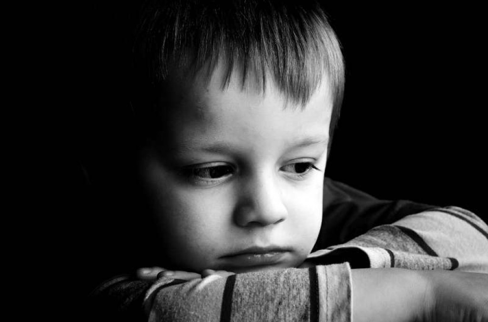
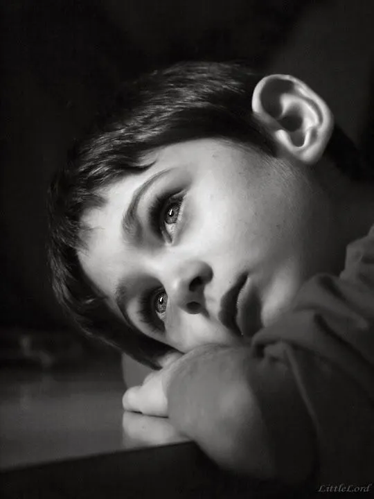
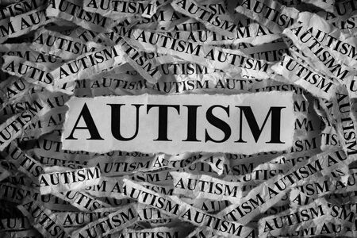
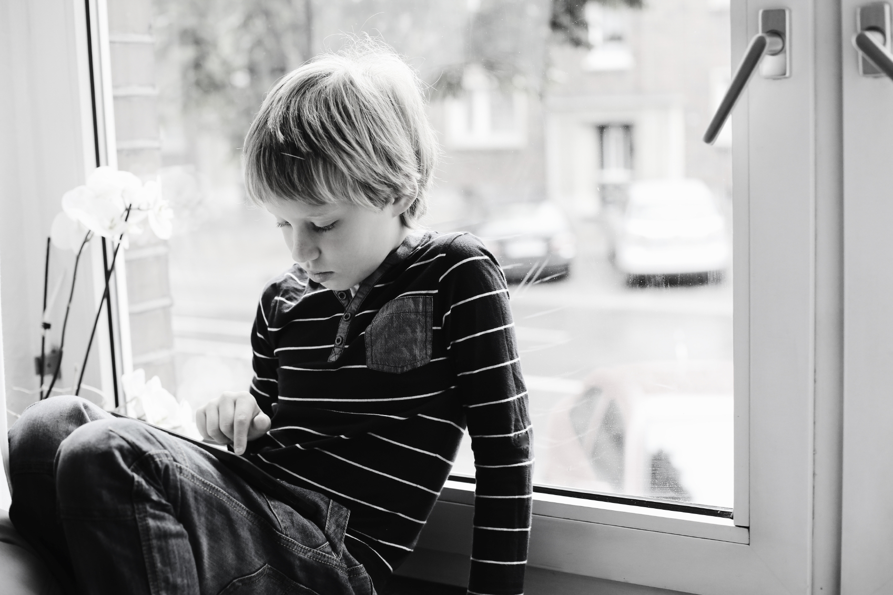

𝕬𝖚𝖙𝖎𝖘𝖒𝖔
¿Qué es el autismo?
El autismo es una condición del neurodesarrollo que generalmente comienza a manifestarse durante los primeros años de vida. Afecta principalmente la comunicación y la interacción social, así como la presencia de comportamientos repetitivos, intereses específicos o una necesidad particular de mantener rutinas.
Algunas personas autistas pueden tener dificultades para comprender gestos, expresiones faciales o reglas sociales implícitas. Otras pueden experimentar una sensibilidad especial a los sonidos, las luces, los olores o las texturas.
Sin embargo, el autismo no se presenta de la misma manera en todos los individuos. Algunas personas necesitan apoyo constante para realizar actividades cotidianas, mientras que otras son más independientes. Por esta razón, es importante conocer las necesidades de cada persona sin hacer generalizaciones.
El autismo, conocido como trastorno del espectro autista (TEA), es una condición del neurodesarrollo que influye en la manera en que una persona se comunica, interactúa con los demás, aprende y percibe el mundo que la rodea. Se denomina espectro porque se manifiesta de diferentes formas y cada persona presenta características, habilidades y necesidades particulares.
En la actualidad, el autismo es un tema importante para la medicina, la psicología y la educación, ya que conocer sus características permite identificar las necesidades de las personas autistas y brindarles los apoyos adecuados. También es fundamental combatir los prejuicios y promover el respeto, la inclusión y la igualdad de oportunidades.
El objetivo de esta investigación es explicar qué es el autismo, cuáles son sus causas, sus principales características, cómo se diagnostica y qué apoyos pueden ayudar a las personas autistas a mejorar su calidad de vida.

Historia del autismo
El estudio del autismo comenzó a desarrollarse de manera más específica durante el siglo XX. En 1943, el psiquiatra Leo Kanner publicó una investigación en la que describió a varios niños con características particulares en la comunicación y la interacción social.
En 1944, Hans Asperger publicó observaciones sobre niños con diferencias en la interacción social y patrones de intereses específicos. Posteriormente, el término síndrome de Asperger se utilizó para describir algunas de estas características.
Con el paso de los años, las investigaciones permitieron comprender mejor el autismo y modificar los criterios de diagnóstico. Actualmente, el síndrome de Asperger se integra dentro del trastorno del espectro autista en los principales sistemas diagnósticos contemporáneos.
Hoy en día, la investigación busca mejorar la identificación, los apoyos y la calidad de vida de las personas autistas, reconociendo sus derechos y su diversidad.

Señales tempranas del autismo
Las primeras señales pueden aparecer durante los primeros años de vida, aunque no todas las personas muestran las mismas características ni son identificadas a la misma edad.
Algunas señales que pueden justificar una evaluación profesional son:
- No responder de manera consistente al nombre.
- Presentar diferencias en el desarrollo del lenguaje.
- Utilizar pocos gestos para señalar o compartir intereses.
- Mostrar dificultades en la atención conjunta.
- Repetir movimientos o acciones con frecuencia.
- Presentar reacciones intensas ante determinados estímulos sensoriales.
- Mostrar una necesidad marcada de mantener rutinas.
Estas señales no confirman por sí solas el autismo. Si existen dudas sobre el desarrollo de un niño, lo recomendable es solicitar una valoración profesional para determinar qué apoyos necesita.
Causas del autismo
No existe una única causa conocida del autismo. La evidencia científica indica que intervienen principalmente factores genéticos y procesos relacionados con el desarrollo temprano del cerebro.
Entre los factores estudiados se encuentran:
- Factores genéticos: diferentes variantes genéticas pueden contribuir a la probabilidad de desarrollar autismo.
- Desarrollo cerebral: existen diferencias en los procesos del neurodesarrollo que pueden influir en la comunicación, la percepción y el comportamiento.
- Factores prenatales y perinatales: determinadas condiciones relacionadas con el embarazo o el nacimiento se han asociado con una mayor probabilidad de autismo, aunque una asociación no demuestra necesariamente causalidad.
Es importante aclarar que el autismo no es causado por una mala crianza, la falta de cariño de los padres ni las vacunas. Las investigaciones científicas no respaldan estas explicaciones.

Principales características del autismo
Las características del autismo varían de una persona a otra. Entre las más comunes se encuentran:
- Diferencias en la comunicación: algunas personas pueden tener dificultades para iniciar conversaciones, interpretar bromas o comprender expresiones indirectas.
- Diferencias en la interacción social: pueden necesitar más tiempo para comprender determinadas situaciones sociales o preferir formas distintas de relacionarse.
- Comportamientos repetitivos: pueden incluir movimientos de manos, balanceos o repetición de palabras y frases.
- Intereses específicos: algunas personas desarrollan un interés intenso por temas como los animales, la música, los números o los videojuegos.
- Necesidad de rutinas: los cambios inesperados pueden causar estrés o ansiedad.
- Sensibilidad sensorial: los sonidos fuertes, las luces intensas, ciertos olores o las texturas pueden resultar especialmente molestos.
Estas características no significan que las personas autistas carezcan de emociones o no puedan establecer relaciones afectivas. Cada persona tiene su propia manera de sentir, comunicarse y expresar sus necesidades.
Diagnóstico del autismo
El diagnóstico debe ser realizado por profesionales capacitados, mediante una evaluación que considere el desarrollo, la comunicación, la interacción social y los patrones de comportamiento.
El proceso puede incluir:
- Entrevistas familiares: permiten conocer la historia del desarrollo desde la infancia.
- Observación clínica: ayuda a evaluar la comunicación y la interacción social.
- Evaluación del lenguaje: permite conocer las habilidades de comprensión y expresión.
- Evaluación del desarrollo: puede incluir el aprendizaje, las habilidades cognitivas y la autonomía.
- Instrumentos especializados: pueden utilizarse pruebas estandarizadas como apoyo a la evaluación clínica.
No existe una prueba de sangre que diagnostique por sí sola el autismo. Un diagnóstico adecuado permite comprender las necesidades de la persona y planificar los apoyos más apropiados.

Tratamientos y apoyos
Aunque no existe una cura única para el autismo, hay diferentes intervenciones que pueden favorecer el aprendizaje, la comunicación, la autonomía y el bienestar.
Entre los principales apoyos se encuentran:
- Terapia del lenguaje: ayuda a desarrollar la comunicación verbal o mediante sistemas alternativos.
- Terapia ocupacional: puede favorecer la autonomía y la realización de actividades cotidianas.
- Apoyo psicológico: puede ayudar a manejar la ansiedad, las emociones y las dificultades que surgen en la vida diaria.
- Apoyo educativo: incluye adaptaciones escolares, instrucciones claras y materiales visuales.
- Orientación familiar: proporciona herramientas para comprender las necesidades de la persona y mejorar la convivencia.
Los medicamentos no eliminan el autismo, pero en algunos casos pueden utilizarse para tratar condiciones coexistentes o síntomas específicos bajo supervisión médica.
Los apoyos deben adaptarse a cada persona y respetar su dignidad, sus preferencias y sus necesidades.
El autismo en la familia y la escuela
La familia y la escuela desempeñan un papel fundamental en el desarrollo de las personas autistas.
En el hogar, es importante ofrecer afecto, establecer rutinas cuando sean útiles, respetar las formas de comunicación y preparar los cambios con anticipación. También es necesario evitar las comparaciones y reconocer los avances individuales.
En la escuela, los docentes pueden utilizar horarios visuales, instrucciones sencillas, actividades organizadas por pasos y espacios tranquilos cuando sean necesarios. Estas estrategias pueden facilitar el aprendizaje y reducir el estrés.
Además, es fundamental prevenir el acoso escolar y enseñar a los compañeros a respetar las diferencias. La inclusión no consiste únicamente en compartir un salón de clases, sino en garantizar que todos los estudiantes tengan oportunidades reales de aprender y participar.
Derechos de las personas autistas
Las personas autistas tienen derecho a recibir educación, atención sanitaria, protección, respeto y oportunidades de participación social.
También tienen derecho a expresar sus preferencias, comunicarse mediante los medios que necesiten y recibir adaptaciones razonables para realizar actividades educativas, laborales y cotidianas.
La Convención sobre los Derechos de las Personas con Discapacidad de las Naciones Unidas establece principios de igualdad, accesibilidad, autonomía e inclusión.
Respetar estos derechos significa reconocer que cada persona tiene capacidades, intereses y necesidades propias, y que el diagnóstico no debe ser motivo de exclusión o discriminación.
Conclusión
El autismo es una condición del neurodesarrollo que influye en la comunicación, la interacción social, la percepción sensorial y los patrones de comportamiento. Se presenta de diferentes maneras, por lo que cada persona tiene habilidades y necesidades particulares.
Aunque todavía existen aspectos que continúan investigándose, se sabe que intervienen factores genéticos y del desarrollo temprano. También se ha demostrado que el autismo no es causado por una mala crianza ni por las vacunas.
La identificación adecuada y los apoyos individualizados pueden favorecer el aprendizaje, la autonomía y la calidad de vida. La familia, la escuela, los profesionales de la salud y la sociedad deben colaborar para reducir las barreras y promover la inclusión.
En definitiva, conocer el autismo ayuda a combatir los prejuicios y a comprender que las diferencias en la manera de pensar, comunicarse y aprender forman parte de la diversidad humana. Todas las personas merecen respeto, oportunidades y la posibilidad de desarrollar sus capacidades.
- Organización Mundial de la Salud (OMS). Autism. https://www.who.int/en/news-room/fact-sheets/detail/autism-spectrum-disorders
- National Institute of Mental Health (NIMH). Autism Spectrum Disorder. https://www.nimh.nih.gov/health/publications/autism-spectrum-disorder
- Centers for Disease Control and Prevention (CDC). Data and Statistics on Autism Spectrum Disorder. https://www.cdc.gov/autism/data-research/index.html
- Naciones Unidas. Convención sobre los Derechos de las Personas con Discapacidad. https://www.ohchr.org/es/instruments-mechanisms/instruments/convention-rights-persons-disabilities